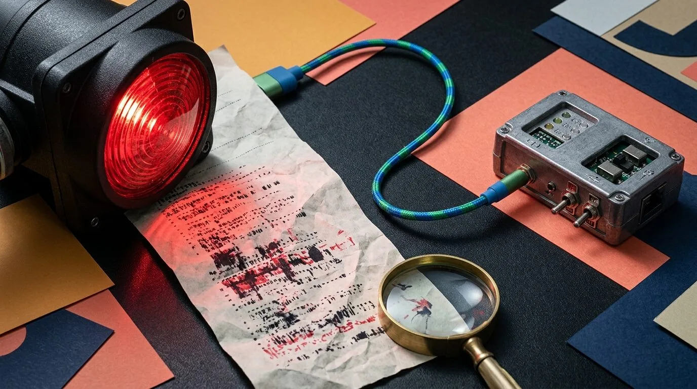
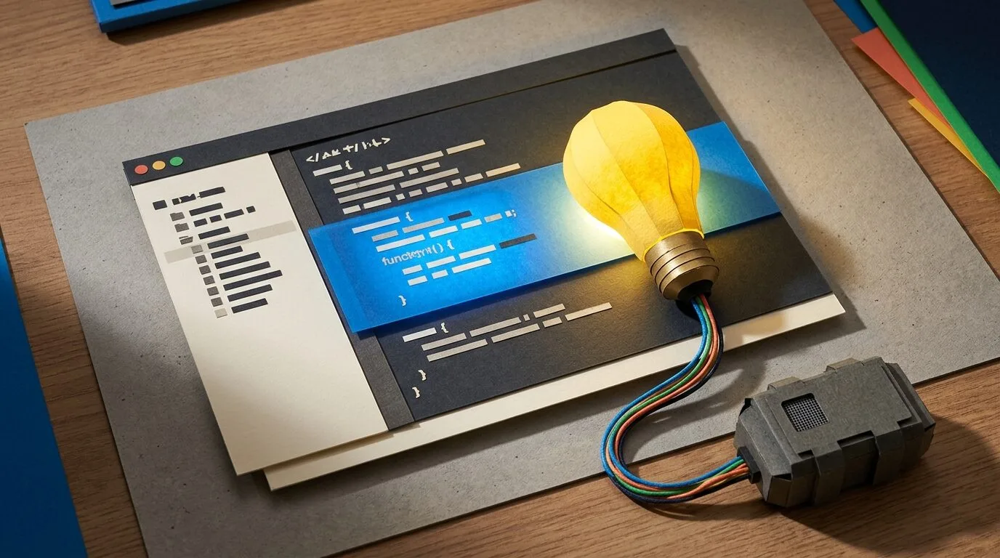
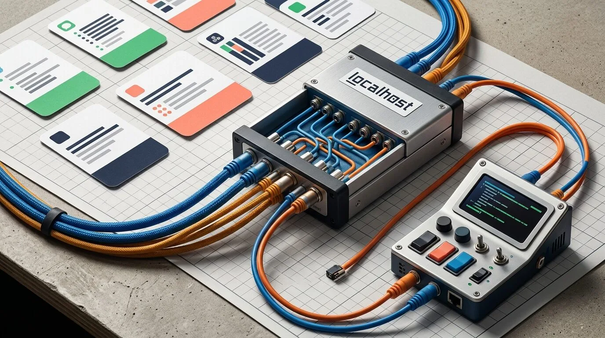
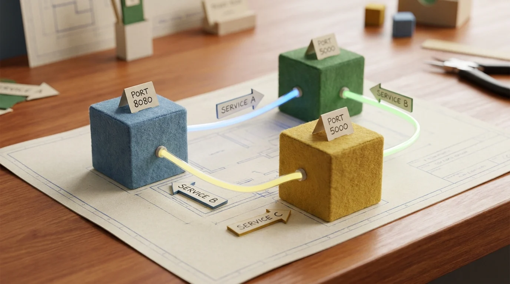
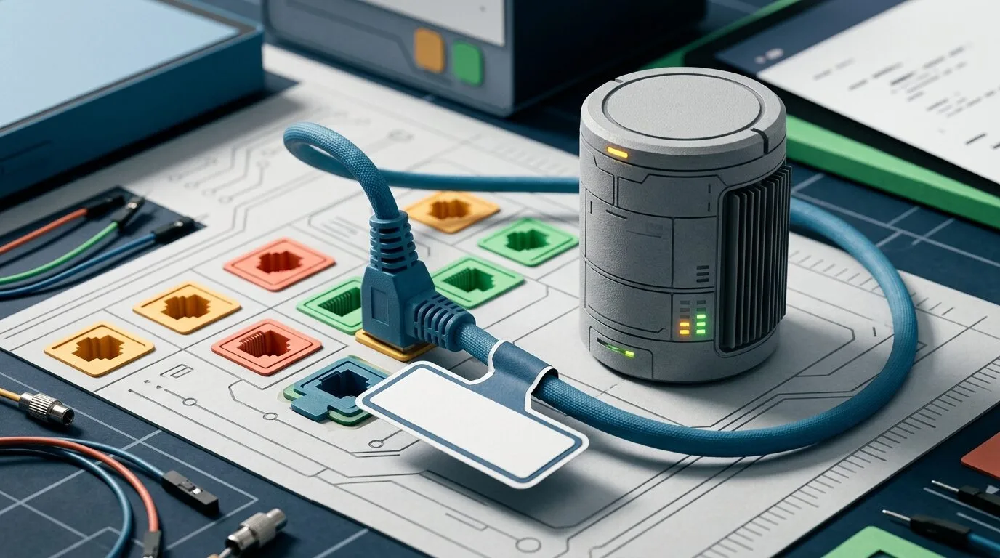

Small programs that hand work to your coding agent.
You already have a coding agent running in a repo terminal — Claude Code, Codex, Cursor. Each example is a short program that sends it a task and shows the reply. A button click, a failing test, an editor command, or an incoming webhook becomes a job the agent picks up.
They all use the same trick. The program posts a small message to the Port Daddy daemon on your machine. The agent in your terminal reads the message, does the work, and replies. No hosted service, no extra account.
PD Tube is the smallest version of the idea. A web page sends one task, the agent acts, and the threaded reply shows up inline. Every other example is a variation on that one exchange.
Turn a plain HTML button into a phone line to the coding agent already running in your repo.
This is the lede. The page does not integrate with Claude, OpenAI, MCP, or a hosted webhook. It POSTs JSON to the local daemon, and the terminal agent already sitting in the repo becomes the worker.
What it builds: a browser page with three buttons that publish work into Port Daddy and render the agent's threaded reply inline.
Keep agents out of each other's way
The reason Port Daddy exists. Two agents grab the same file, the second write wins, and an hour of work disappears into a clean-looking merge. These stop that: claims, locks, a shared board, and a trail you can recover from.
The canonical Port Daddy story: two agents reach for one file, and only one writes at a time — claims, locks, and notes instead of a silent overwrite.
Four agents — scout, builder, verifier, integrator — run in one process and pass work down a chain without ever clobbering each other.
Run a swarm of identical workers where exactly one becomes leader and the rest keep working as followers.
Three agents investigate a production bug over one shared channel, record findings as notes, and one of them proposes the root-cause fix.
Publish concrete event traces for star, ring, and arbiter coordination patterns, so a workflow can be inspected after it runs.
Turn an event into agent work
The PD Tube pattern from the lede, pointed at real triggers — a failing test, an editor selection, an inbound webhook. The event enters the daemon; the agent in your terminal answers.

Wrap a failing test command, publish the failure to the local agent, and print the diagnosis back in the same terminal.

Select code in a page, publish the file and range to the agent, and render the explanation right next to the selection.

Accept Slack, Discord, Linear, or generic webhook JSON and route it to the local agent through PD Tube.
Wire local services together
The plumbing underneath: deterministic ports, name-based discovery, throwaway CI databases, a managed tunnel, and peer links brokered through durable inboxes.

An API, a frontend, and a worker each claim a stable port and discover one another by name — no hardcoded ports, no race for 3000.

Claim a semantic port for a throwaway Postgres test database, then print the DATABASE_URL your tests should use.
Claim a local service, open a public tunnel only when you ask for it, and publish the URL for other agents — then tear it down cleanly.
Use durable agent inboxes to exchange an SDP offer and answer before two peers open their direct channel.